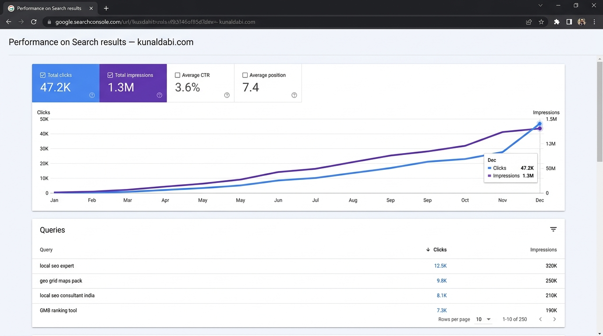
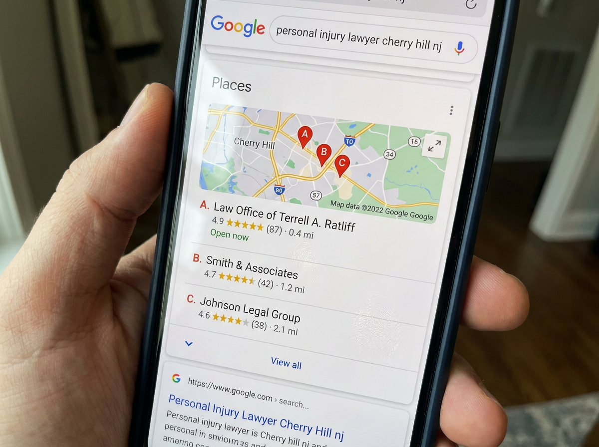

01 · GET FOUND
Google Business Profile Optimization
Improve your business profile, local relevance, and customer-facing details so nearby customers can find you.
↗DIGITAL SERVICES · LOCAL VISIBILITY · WEB SOLUTIONS
I help businesses improve their Google visibility, build useful websites and web apps, and create a stronger presence online.

WHAT I DO
Practical digital support to help your business get discovered, look professional, and work better online.
01 · GET FOUND
Improve your business profile, local relevance, and customer-facing details so nearby customers can find you.
↗02 · LOCAL REACH
Strengthen local search foundations with accurate business information and relevant directory listings.
↗03 · E-COMMERCE
Set up and troubleshoot product listings to help shoppers discover your products across Google.
↗04 · WEB APPS
Build or improve no-code web apps, workflows, and responsive experiences around your idea.
↗05 · WEB DESIGN
Create or refresh a clear, mobile-friendly website that presents your business professionally.
↗06 · SOCIAL PRESENCE
Plan and manage consistent social content that keeps your business active and connected with its audience.
↗LOCAL SEARCH, MADE VISIBLE
Local SEO should be more than promises. Compare these map results to see how a stronger local presence can take shape over time.
Move between the two snapshots to explore the change in map visibility.


Use the slider to compare both map snapshots.

47.2K clicks · 1.3M impressions · 3.6% CTR · average position 7.4.

2,847 profile interactions, 421 calls, and 1,029 direction requests over 90 days.

A visible citation in an AI-generated search overview for a local SEO query.

A local search result featuring a law office in the map pack.
A LITTLE ABOUT ME
Also known as Osbert Pro
I’m Osbert Samuel, a Google Business Profile and Local SEO specialist, Bubble.io developer, and Webflow designer based in Nigeria.
I help businesses improve their online presence through local search optimization, modern websites, and practical no-code web apps.
Based in Nigeria, I work with clients locally and worldwide.


SELECTED BUSINESS EXPERIENCE
Explore work across local SEO, no-code apps, and website development.
Dental clinic
Google Business Profile optimization, dental service category optimization, local keyword research and Google Maps SEO.Tattoo / cosmetic studio
GBP optimization, tattoo service listings, business description improvement, photo optimization and local citation building.Dental clinic
Local SEO audit, GBP optimization, dental treatment keyword targeting, review strategy and Google Maps visibility improvement.Dental clinic
GBP profile cleanup, primary and secondary category optimization, service descriptions, local citations and competitor analysis.Ticket marketplace
Bubble.io marketplace development, ticket listing workflows, user authentication, payment integration and responsive dashboard design.Property marketplace
Bubble.io property listing platform, advanced search filters, user dashboards, booking workflows and database optimization.Catering
Bubble.io catering management application, order management workflows, customer booking system and automated notifications.Healthcare
Bubble.io healthcare portal, patient dashboard UI, appointment management workflows and secure database architecture.Hair salon
Complete Webflow website redesign, salon service pages, stylist portfolio, appointment booking integration and mobile responsiveness.Medical aesthetics
Webflow multi-page website development, treatment landing pages, clinic location pages, CMS integration and technical SEO.Beauty clinic
Webflow website redesign, treatment service pages, consultation booking integration, responsive layouts and on-page SEO.Tattoo studio
Webflow website development, tattoo artist portfolio, tattoo gallery CMS, booking inquiry forms and local SEO structure.Beauty salon
Wix Studio website redesign, waxing service pages, online booking integration, mobile optimization and local SEO.Tattoo studio
Wix website redevelopment, tattoo portfolio gallery, artist profile pages, appointment inquiry forms and website performance improvements.Dental clinic
Wix website redesign, dental treatment pages, appointment booking system, patient inquiry forms and SEO optimization.Property development
Wix website redesign, property showcase pages, project gallery, lead generation forms and responsive website development.Project visuals are illustrative placeholders. Replace them with your real project screenshots and case studies when ready.
GET IN TOUCH
Have a project in mind? Tell me what you’re working on.